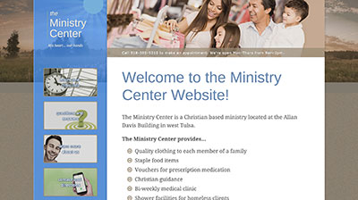
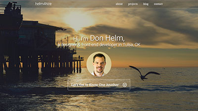

A Little About Me
My journey in web development began a little over ten years ago when I fell hard and fast in love with creating websites. Well, not exactly fast by many people's standards. It's actually only been within the last year or two that I've developed an intense desire to become an expert in the field. Before that I considered myself more of a multimedia generalist doing a lot of graphic design and video production in addition to web. I've had the privilege of leading many teams on a wide range of projects, mostly websites, while working full-time at Central Technology Center over these last seven years. But then I met Sass, Gulp and Angular, and my love for development sky rocketed!
Outside of work I have a beautiful wife and two cute, awnry kids. When I'm not working on web projects or spending time with my family, I like to go water skiing in the summer and snowboarding in the winter.
Technology & Skills
Here's a list of a lot of the things I've learned in web design and development over the years. See my resume for a snapshot of my job experience.
- HTML
- CSS
- jQuery
- Sass/Compass
- JS/CoffeeScript
- Bootstrap
- Susy & Breakpoint
- Wordpress
- Statamic
- Drupal
- Angular JS
- Gulp
- GIT
- Photoshop
- InVision
- UX & UI Design
- Responsive Development
- Performance Optimization
- Accessibility & SEO
- HTML5 Document Outliner
- Amazon Web Services
- Google Analytics & PPC Ads
- Mac Terminal
- NPM & Bower
- HTML5 incl Video & Forms
- Use of Picture & PictureFill
- CSS3 & JS Animation
- Modernizr
- Project Management
- Writing & Social Media
Latest Projects
Here are some samples of my latest work.
Mike Yeager - Pro Angler
Mike came to me in need of a new website to help him get some new sponsors for his upcoming fishing season. We wanted to create a site that would show him off... I created a custom responsive site that he can easily make changes to directly in his browser.
Visit Site

The Ministry Center
Some info about The Ministry Center site...
Visit Site

This Site
Info about my portfolio...
Visit Site
My Online Presence
I have not been very active in online social circles on account of the limited time I have as a full-time instructor with paid side projects and a wonderful family with whom I thoroughly enjoy spending any time possible. However, I have recently started making more of an effort to participate in Open Source projects on GitHub.
Check me out on GitHub, LinkedIn and Twitter

My Online Presence
I have not been very active in online social circles on account of the limited time I have as a full-time instructor with paid side projects and a wonderful family with whom I thoroughly enjoy spending any time possible. However, I have recently started making more of an effort to participate in Open Source projects on GitHub.